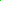

The GrADS Default colors
Col# Description Sample R G B
0 background  0 0 0 (black by default)
0 0 0 (black by default)
1 foreground  255 255 255 (white by default)
255 255 255 (white by default)
2 red 250 60 60
3 green  0 220 0
4 dark blue 30 60 255
5 light blue 0 200 200
6 magenta 240 0 130
7 yellow 230 220 50
8 orange 240 130 40
9 purple 160 0 200
10 yellow/green 160 230 50
11 medium blue 0 160 255
12 dark yellow 230 175 45
13 aqua 0 210 140
14 dark purple 130 0 220
15 gray  170 170 170
170 170 170
The GrADS Default Rainbow Sequence
Col# Description Sample R G B
9 purple 160 0 200
14 dark purple 110 0 220
4 dark blue 30 60 255
11 medium blue 0 160 255
5 light blue 0 200 200
13 aqua 0 210 140
3 green 0 220 0
10 yellow/green 160 230 50
7 yellow 230 220 50
12 dark yellow 230 175 45
8 orange 240 130 40
2 red 250 60 60
6 magenta 240 0 130
Disclaimer: The color samples may not be displayed properly.